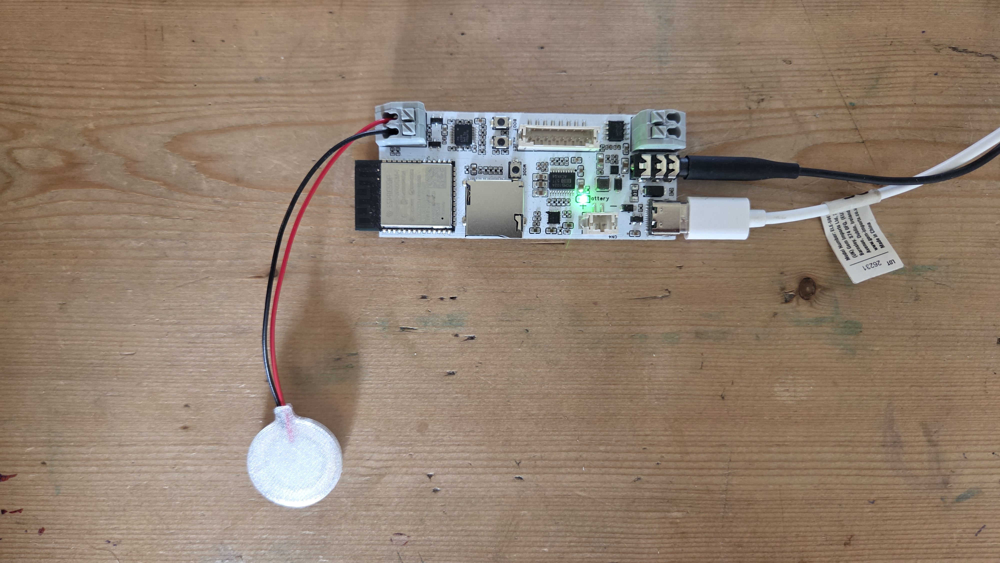
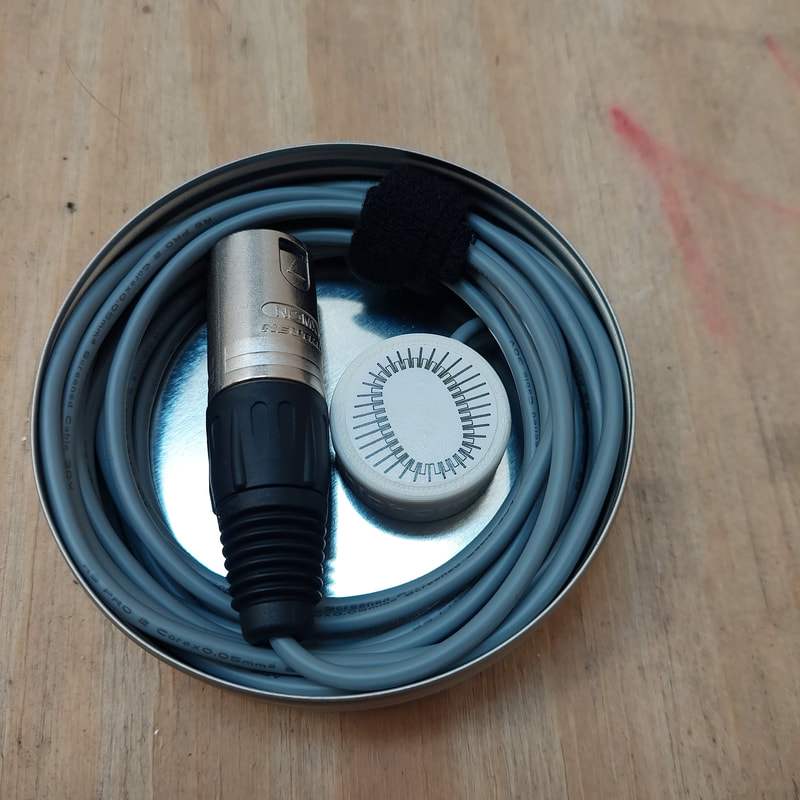

Products
Handcrafted sonic exploration tools. Lead time: 1-2 weeks. All prices in EUR (€).

Smart Contact Microphone Kit
Turn anything into an instrument, capture sound on the go, and explore the world of vibration and programmable digital signal processing with the Soniphorm Smart Contact Mic.
Stick a sensor to a bridge and hear it sing. Turn a metal sculpture into a reverberating instrument. Add delay and distortion to a kalimba without any pedals or cables. Record textures from the world around you straight to an SD card. The SCM is a pocket-sized sound engine that listens through surfaces — attach it to anything that vibrates, shape what you hear with effects you design yourself, and play it back through a speaker or headphones. Everything is configured visually on your phone or laptop, no coding or software installation needed.
At its simplest it's an instrument pickup. But it can do far more — capture the harmonic spectrum of an object and immediately play it with a MIDI keyboard, explore mechanical resonance feedback when paired with an exciter, trigger samples with piezo hits, or take a deep dive into building synthesisers with an extensive library of modules including ADSRs, LFOs and VCOs.
Push the bare leads of the included piezo into the spring terminals — no soldering, no tools. Connect the SCM to your computer via USB and open the Soniphorm Patcher in your browser to design and upload patches. If you already have audio gear — a mixer, speakers, an audio interface — the line output slots straight into your existing setup. But you don't need any of that to get started. A smartphone and a pair of wired headphones is all it takes: power the device over USB, program it wirelessly via Bluetooth, plug in, and listen.
At 32 × 75 mm it's small enough to embed inside instruments, sculptures, or wearables — built for instrument makers, sound designers, and installation artists who want to design their sound in the browser and hear it on the hardware in seconds.
Limited first batch of 90 boards. Follow us on Instagram or join the Discord for launch updates.
Specs:
- 48 kHz / 16-bit audio, mono in / stereo out
- Differential piezo preamp (high-impedance input)
- Line-level headphone output
- 40+ audio module types (oscillators, filters, effects, sequencers, samplers)
- MicroSD card slot for sample playback and recording
Connectivity:
- USB-C (power, firmware updates, serial control)
- Bluetooth LE (wireless patching from smartphone)
- 5V USB powered
- 32 × 75 mm

Active Magnetic Contact Microphone
Professional-grade contact microphone with built-in impedance matching preamplifier. Enhanced low-frequency response for superior sound capture.
Features:
- XLR connector (Neutrik)
- Requires 48V phantom power
- Built-in preamp for enhanced low-frequency response
- Internal magnet for easy attachment to steel surfaces
- 3D printed ABS enclosure with waterproof epoxy coating
- 3-meter cable included
- Storage tin provided
Ideal For:
- Field recording
- Instrument amplification
- Sound design and experimental audio
- Architectural acoustics exploration
Active Exciter System
Complete multi-channel vibration speaker system. Turn any surface into a resonating speaker for sonic exploration and sound design.
System Includes:
- Multi-channel amplifier (USB powered, 5V/1-2A)
- Exciter drivers with 3m cables (REAN minijack terminators)
- 3D-printed enclosures with handles
- Mic stand adapters for each exciter
- Velcro cable ties
- Felt dampening pads
- 1/4" input sockets (line-level audio)
- Carry case
Specifications:
- Frequency response: 300 Hz to 20 kHz
- Impedance: 8Ω per driver
- Power: 2W per driver
You'll Need:
- Audio interface or mixer
- 1/4" cables
- USB charger (5V/1-2A)